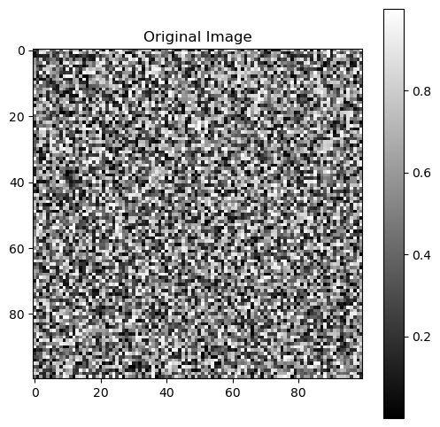
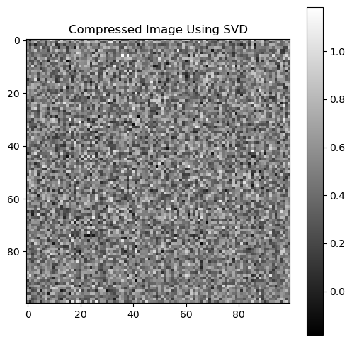
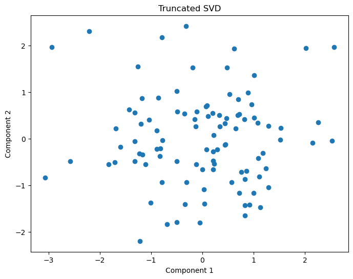

import numpy as np
X = np.array([
[1, 2],
[3, 4],
[5, 6]
])
Xarray([[1, 2],
[3, 4],
[5, 6]])SVD is one of the most important mathematical tools in modern data science, machine learning, computer vision, natural language processing, and statistical genetics.
Although the name sounds intimidating, the underlying idea is elegant:
SVD decomposes a matrix into simpler components that reveal hidden structure in the data.
SVD powers many widely used techniques, including:
In this tutorial, we will develop an intuitive understanding of SVD and implement it step-by-step using Python.
By the end of this tutorial, you will understand:
In data science, we often work with matrices:
| Rows | Columns |
|---|---|
| Samples | Features |
| Users | Movies |
| Patients | Genes |
| Documents | Words |
These matrices are usually:
Matrix factorization helps us discover:
SVD decomposes a matrix into three matrices:
where:
| Matrix | Meaning |
|---|---|
| U | Left singular vectors |
| Σ | Singular values |
| Vᵀ | Right singular vectors |
Think of SVD as:
This transformation helps reveal the most important directions in the dataset.
Matrix U contains the left singular vectors.
These vectors describe relationships among samples.
In machine learning terms:
Matrix \[\Sigma\] contains the singular values.
These values indicate how important each latent dimension is.
Larger singular values:
Smaller singular values often correspond to:
Matrix Vᵀ contains the right singular vectors.
These describe relationships among features.
For example:
Suppose we have the following matrix:
import numpy as np
X = np.array([
[1, 2],
[3, 4],
[5, 6]
])
Xarray([[1, 2],
[3, 4],
[5, 6]])
# Computing SVD in Python
U, S, VT = np.linalg.svd(X)
print("U Matrix:")
print(U)
print("\nSingular Values:")
print(S)
print("\nV Transpose:")
print(VT)
# Understanding the Shapes
print("Shape of X:", X.shape)
print("Shape of U:", U.shape)
print("Shape of S:", S.shape)
print("Shape of VT:", VT.shape)
U Matrix:
[[-0.2298477 0.88346102 0.40824829]
[-0.52474482 0.24078249 -0.81649658]
[-0.81964194 -0.40189603 0.40824829]]
Singular Values:
[9.52551809 0.51430058]
V Transpose:
[[-0.61962948 -0.78489445]
[-0.78489445 0.61962948]]
Shape of X: (3, 2)
Shape of U: (3, 3)
Shape of S: (2,)
Shape of VT: (2, 2)To reconstruct the matrix:
Sigma = np.zeros((3,2))
Sigma[:2, :2] = np.diag(S)
X_reconstructed = U @ Sigma @ VT
print(X_reconstructed)[[1. 2.]
[3. 4.]
[5. 6.]]The reconstructed matrix is nearly identical to the original matrix.
This means:
SVD transforms data geometrically.
It:
This is why SVD is closely connected to dimensionality reduction.
PCA is heavily based on SVD.
PCA identifies directions of maximum variance.
Mathematically:
# PCA Using SVD
from sklearn.decomposition import PCA
from sklearn.preprocessing import StandardScaler
import pandas as pd
np.random.seed(42)
data = pd.DataFrame({
"Feature1": np.random.normal(size=100),
"Feature2": np.random.normal(size=100),
"Feature3": np.random.normal(size=100)
})
scaled = StandardScaler().fit_transform(data)
pca = PCA(n_components=2)
components = pca.fit_transform(scaled)
components[:5]array([[ 1.29174396, -1.04666426],
[ 0.45039226, -0.11931939],
[ 1.28477005, 0.27171728],
[ 2.14595546, -0.08837814],
[-0.78437651, -0.93369576]])# Visualizing PCA Components
import matplotlib.pyplot as plt
plt.figure(figsize=(8,6))
plt.scatter(
components[:,0],
components[:,1]
)
plt.xlabel("PC1")
plt.ylabel("PC2")
plt.title("PCA Using SVD")
plt.show()
The singular values determine how much information each component contains.
print(pca.explained_variance_ratio_)[0.41760625 0.32181058]One powerful property of SVD is that we can approximate matrices using only the largest singular values.
This allows:
Suppose we keep only the first singular value.
U, S, VT = np.linalg.svd(X)
k = 1
U_k = U[:, :k]
S_k = np.diag(S[:k])
VT_k = VT[:k, :]
X_approx = U_k @ S_k @ VT_kThis approximation:
This idea is fundamental in:
Images are matrices of pixel intensities.
SVD can compress images by storing only important singular values.
# Creating a Synthetic Image
image = np.random.rand(100,100)
plt.figure(figsize=(6,6))
plt.imshow(image, cmap='gray')
plt.title("Original Image")
plt.colorbar()
plt.show()
# Compressing the Image
U, S, VT = np.linalg.svd(image)
k = 20
#compressed = U[:, :k] @ np.diag(S[:k]) @ VT[:k, :]
compressed = np.dot(
np.dot(U[:, :k], np.diag(S[:k])),
VT[:k, :]
)
U, S, VT = np.linalg.svd(X)
# Visualizing the Compressed Image
plt.figure(figsize=(6,6))
plt.imshow(compressed, cmap='gray')
plt.title("Compressed Image Using SVD")
plt.colorbar()
plt.show()
| Domain | Application |
|---|---|
| NLP | Latent Semantic Analysis |
| Computer Vision | Image compression |
| Recommendation Systems | Matrix completion |
| Genetics | Population structure |
| Signal Processing | Noise reduction |
| Finance | Factor modeling |
In genomics, SVD is widely used for:
| Advantage | Explanation |
|---|---|
| Powerful dimensionality reduction | Captures major structure |
| Noise filtering | Removes weak components |
| Efficient representation | Compresses data |
| Broad applicability | Used across disciplines |
| Limitation | Explanation |
|---|---|
| Computationally expensive | Large matrices are costly |
| Interpretation challenges | Components may lack biological meaning |
| Sensitive to scaling | Standardization is important |
SVD becomes expensive for very large datasets.
Challenges include:
Modern large-scale applications often rely on:
Truncated SVD keeps only the largest singular values.
This is particularly useful for sparse high-dimensional datasets.
# Example with Truncated SVD
from sklearn.decomposition import TruncatedSVD
svd = TruncatedSVD(n_components=2)
reduced = svd.fit_transform(scaled)
reduced[:5]
array([[ 1.29174396, -1.04666426],
[ 0.45039226, -0.11931939],
[ 1.28477005, 0.27171728],
[ 2.14595546, -0.08837814],
[-0.78437651, -0.93369576]])
# Visualizing Truncated SVD
plt.figure(figsize=(8,6))
plt.scatter(
reduced[:,0],
reduced[:,1]
)
plt.xlabel("Component 1")
plt.ylabel("Component 2")
plt.title("Truncated SVD")
plt.show()
SVD is one of the foundational tools in data science and machine learning. It decomposes a matrix into orthogonal components that capture the hidden structure of the data. By separating important patterns from noise, SVD enables dimensionality reduction, compression, denoising, and latent representation learning.
SVD is deeply connected to Principal Component Analysis (PCA) and forms the mathematical backbone of many algorithms used in recommendation systems, natural language processing, computer vision, and genomics. Large singular values correspond to the most informative latent dimensions, while smaller singular values often represent weaker or noisy patterns.
In practice, SVD helps transform complex high-dimensional datasets into compact and interpretable representations. Despite computational challenges for extremely large matrices, modern approaches such as truncated and randomized SVD make these methods scalable for real-world machine learning applications.